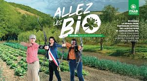
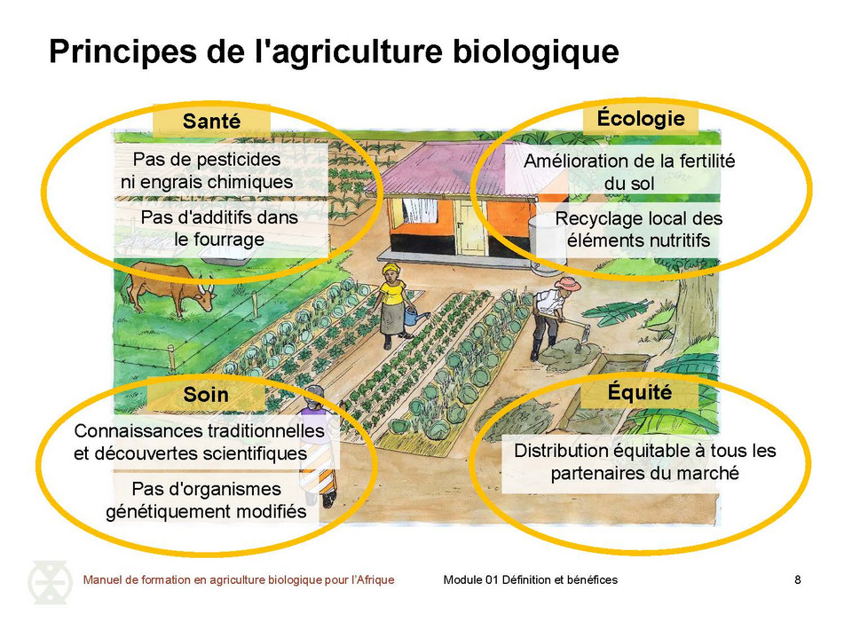

bas de la page

Les bénéfices de l’agriculture biologique pour votre territoire :
L’Agriculture Biologique
est un objectif et un enjeu pour l'action publique territoriale :
- Création d’emplois durables et de qualité
- Aménagement équilibré
- Dépenses curatives qui ne sont plus nécessaires
- Développement de l’attractivité du territoire
- Renforcement de la cohésion sociale Préservation de la santé publique
- Préserver les ressources naturelles
- etc.